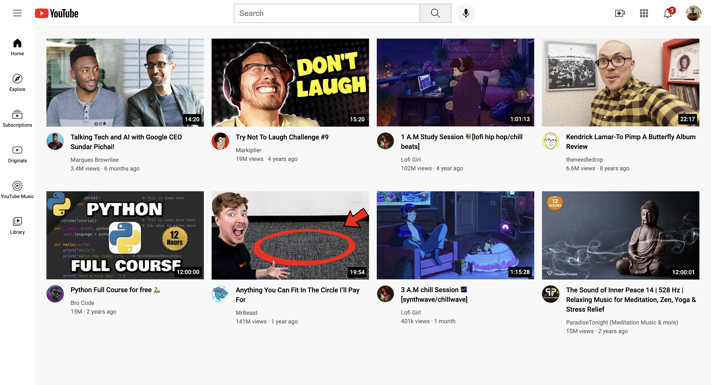

This project is a YouTube clone built with HTML and CSS. It replicates a YouTube homepage, allowing users to click on video thumbnails, which redirect them to the actual video link.

Features
HTML
Clicking on a thumbnail on the page redirects you to the actual video.
Displays the youtuber profile
Displays video length
Shows the date the video was posted
CSS
Displays the youtube sidebar which features the icons
Displays the youtube headers which feature the icons, search box, microphone and user profile picture
Technologies used
This page was created using:
HTML for structuring the page and displaying the required icons, thumbnails, view count and date posted
CSS for styling the sidebar, header, icons, and structuring the videos to display in rows